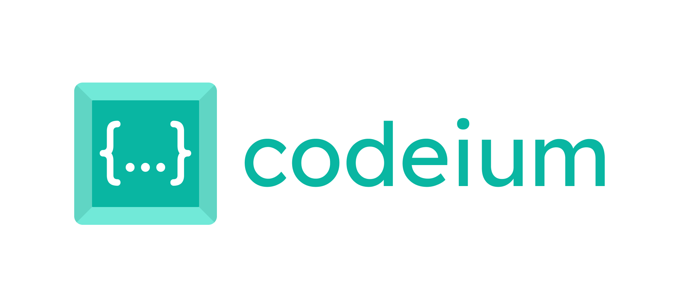

GitHub Copilot
은 GitHub와 OpenAI가 공동 개발한 인공지능 코딩 도우미로, Visual Studio Code 같은 코드 편집기에서 자동으로 코드 제안을 생성해줍니다. 마치 프로그래머의 "짝궁(pair)"처럼 함께 코드를 작성하는 경험을 제공합니다.
주요 기능
자동 코드 완성
함수 이름이나 변수명을 입력하면, 이어질 코드를 AI가 예측하여 자동으로 완성해줍니다.
주석 기반 코드 생성
사용자 로그인 처리 같은 주석만 입력해도, 관련 코드를 AI가 알아서 생성합니다.
라이브러리 사용 예시 제공
복잡한 API나 라이브러리 함수도 사용 예시를 AI가 제안하여 빠르게 활용할 수 있습니다.
다양한 언어 지원
Python, JavaScript, C++, HTML, CSS 등 여러 언어에서 작동합니다.
테스트 코드 자동 생성
기존 코드를 기반으로 단위 테스트를 자동으로 작성할 수 있습니다.
2. DataCamp Workspace AI
Datacamp Workspace AI
는 데이터 분석가나 학생이 Python/R을 이용해 데이터를 분석하고 시각화할 수 있도록 돕는 도구입니다. AI가 코드 작성, 분석 흐름 설계, 그래프 생성까지 도와주어 노코딩에 가까운 경험도 가능합니다.
주요 기능
AI 기반 코드 생성
"이 데이터를 시각화해줘" 같은 자연어 명령으로 그래프와 분석 코드를 자동으로 생성합니다.
데이터 업로드 및 탐색
CSV, Excel 등의 파일을 쉽게 업로드하고 데이터프레임 형태로 바로 탐색할 수 있습니다.
자동 분석 제안
AI가 데이터를 스캔해 분석 방향을 제안하고 필요한 통계 기법을 추천합니다.
시각화 도우미
matplotlib, seaborn 없이도 차트나 그래프를 자동 생성해줍니다.
워크플로우 자동화
분석 코드의 흐름을 블록처럼 이어가며 보고서 형식으로 정리할 수 있습니다.
3. Codeium

Codeium
은 코드 작성 중에 실시간으로 다음 줄을 예측하거나, 함수 전체를 완성해주는 AI 코딩 보조 도구입니다. VS Code, JetBrains, Jupyter 등 다양한 IDE에 플러그인 형태로 설치 가능하며, 100개 이상의 프로그래밍 언어를 지원합니다.
주요 기능
실시간 자동완성
작성 중인 코드 흐름을 파악해 다음 줄을 제안합니다.
자연어 → 코드 변환
주석이나 설명만 입력하면 그에 맞는 코드를 자동 생성합니다.
테스트 코드 제안
기존 코드 기반으로 단위 테스트 코드도 제안해줍니다.
다양한 언어 지원
Python, JavaScript, Java, C++, HTML/CSS 등 70개 이상의 언어를 지원합니다.
IDE 플러그인
VS Code, IntelliJ, PyCharm, JupyterLab 등에 무료 설치 가능.
4. Wolfram Alpha
Wolfram Alpha
는 계산 지식 엔진(Computational Knowledge Engine)으로, 단순한 검색이 아니라 질문에 대해 계산된 정답과 해설을 제공하는 AI 서비스입니다. 수학, 통계, 과학, 경제, 역사 등 다양한 분야에서 정확하고 구조화된 답변을 제공합니다.
주요 기능
수학 계산
복잡한 수식, 미적분, 방정식, 행렬 연산 등을 입력하면 자동 계산과 풀이 과정을 제공합니다.
통계 및 데이터 분석
평균, 분산, 회귀분석 등 통계 계산과 시각화가 가능합니다.
다양한 분야 지원
과학, 역사, 지리, 의학, 경제, 음악 등 백과사전적 지식을 계산 중심으로 제공합니다.
자연어 처리
“서울과 뉴욕의 시차는?”, “x² + 3x = 5 풀어줘”처럼 자연어 질문도 이해하고 처리합니다.
시각화 기능
함수 그래프, 데이터 차트 등을 자동 생성합니다.
5. Khanmigo
Khanmigo
는 Khan Academy에서 제공하는 AI 기반 학습 보조 도구로, ChatGPT를 기반으로 만들어졌습니다다. 학생들이 수학, 과학, 코딩 등 다양한 주제에 대해 질문을 하고, 개념을 이해하고, 연습문제를 푸는 데 도움을 주는 AI 튜터 역할을 합니다.
주요 기능
개념 설명
수학이나 과학 개념을 쉽게 풀어서 설명해주며, 잘 이해하지 못한 부분도 친절하게 다시 설명합니다.
문제 풀이 도우미
학생이 푸는 문제에 대해 힌트를 주고, 직접 답을 주기보다는 스스로 해결할 수 있도록 유도합니다.
대화형 튜터
마치 진짜 선생님처럼 질문을 받고 대답하며, 대화 방식으로 학습을 이끕니다.
교사용 도구
학생의 학습 상황을 파악하고, 개별 지도를 위한 질문 예시나 피드백 도구도 제공됩니다.
코딩 학습 지원
JavaScript, HTML 등 간단한 코딩 과제를 AI가 함께 도와줍니다.
*요약표*
이름
기능
GitHub Copilot
코드 자동 완성, 분석용 코드 작성 보조(Github와 Visual Studio Code를 활용한다면 강력 추천!)